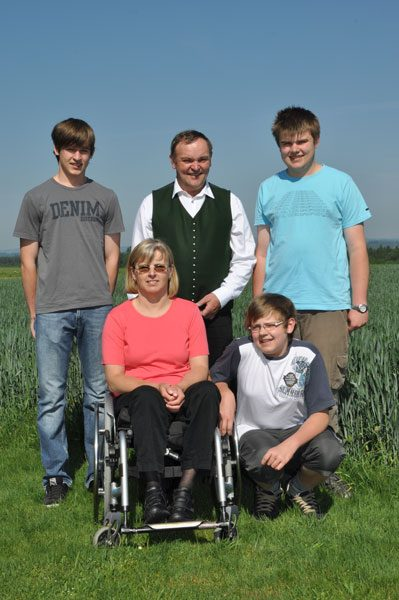

Der Betrieb
Wir haben den Betrieb 1995 übernommen. Neben einer Schweinemast (ca. 200 Mastplätze) halten wir schon seit 1970 etwa 30 Maststiere (auch zur sinnvollen Verwertung des Dauergrünlandes und des Silomaises aus den Silomaisversuchen,…). Auf unseren Ackerflächen legen wir viele pflanzenbauliche Versuche an. Dies ergab sich auch dadurch, dass ich (Franz) am Agrarbildungszentrum Lambach den Gegenstand Pflanzenproduktion unterrichten darf und die Pflanzenbaupraxis daher auf unserem Betrieb mache. Dabei bemühe ich mich, dass die Schüler ständig Neues, Interessantes, aber auch Grundsätzliches sehen und wir gemeinsam Versuche betreuen können.
Der wichtigste Partner für diese Arbeit ist die Landwirtschaftskammer Oberösterreich; Ideengeber für diese Betriebsentwicklung war Pflanzenbaudirektor DI Christian Krumphuber, als dieser noch Wirtschaftsberater an der BBK Wels war. Ein wichtiger Schritt war und ist die Zusammenarbeit mit der AGES (Agentur für Ernährungssicherheit). Wir stellen die Wertprüfungsflächen für die Kulturen Weizen, Gerste, Triticale, Körnermais, Silomais, Raps, Soja zur Verfügung. Daneben gab und gibt es viele Partner aus der Pflanzenbauindustrie, der Landtechnik, der Wasserschutzberatung, …, mit denen wir gemeinsame Projekte und Versuche anlegen.
Jedes Jahr gibt es in Zusammenarbeit mit der Landwirtschaftskammer, der AGES, dem Absolventenverband der landw. Fachschule Lambach und der Zeitung „Der fortschrittliche Landwirt“ einen Feldtag.
Fragen zum Betrieb oder zu den Versuchen?
Kontakt